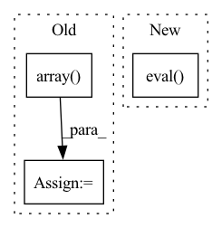

Pattern ID :23675
Before Change
// Define jittor & pytorch array
// ***************************************************************
arr = np.random.randn(16,10,224,224)
jittor_arr = jt.array( arr)
pytorch_arr = torch.Tensor(arr)
// ***************************************************************
// Test InstanceNorm2d Layer
// ***************************************************************
pytorch_result = tnn.InstanceNorm2d(10)(pytorch_arr)
jittor_result = jnn.InstanceNorm2d(10)(jittor_arr)
assert check_equal(pytorch_result.numpy(), jittor_result.numpy()), f"{pytorch_result.mean()} || {jittor_result.mean()}"
// ***************************************************************
// Define jittor & pytorch array
// ***************************************************************
arr = np.random.randn(16,1000)
jittor_arr = jt.array(arr)
pytorch_arr = torch.Tensor(arr)
// ***************************************************************
// Test InstanceNorm2d Layer
// ***************************************************************
pytorch_result = tnn.BatchNorm1d(1000)(pytorch_arr)
jittor_result = jnn.BatchNorm1d(1000)(jittor_arr)
assert check_equal(pytorch_result.detach().numpy(), jittor_result.numpy()), f"{pytorch_result.mean()} || {jittor_result.mean()}"
if __name__ == "__main__":After Change
def forward(self, x):
return self.layer(x)
model = Model()
model.eval()
check_equal(arr, jnn.BatchNorm1d(1000, is_train=False), model, 1e-3)
if __name__ == "__main__":
unittest.main()In pattern: SUPERPATTERN
Frequency: 3
Non-data size: 3
Instances Fragment ID: 73900527
Project Name: jittor/jittor
Commit Name: 4ff60ee04c156de617222c9e708de08260765a42
Time: 2020-04-29
Author: 576825820@qq.com
File Name: python/jittor/test/test_batchnorm.py
M Class Name: TestBatchNorm
N Class Name: TestBatchNorm
M Method Name: test_batchnorm(1)
N Method Name: test_batchnorm(1)
M Parent Class: unittest.TestCase
N Parent Class: unittest.TestCase
M File Name: python/jittor/test/test_batchnorm.py
N File Name: python/jittor/test/test_batchnorm.py
M Start Line: 34
M End Line: 55
N Start Line: 35
N End Line: 62
Before Change
// ]
// )
// num_partitions = 1*np.array([1, 1, 1, 1, 1, 1])
num_partitions = 1*np.array( [4,4])
// num_partitions = 1*np.array([1, 1, 1, 1])
back_analyzer = analyzers.ClosedLoopBackwardAnalyzer(controller, dyn)
back_analyzer.partitioner = partitioner_hyperparamsAfter Change
)
elif args.system is "Quadrotor_8D":
controller = th.load(dir_path+"/models/Quadrotor_8D/intermediate_policy_0.pt")
controller.eval()
else:
raise NotImplementedError
// Set up analyzer (+ parititoner + propagator) Fragment ID: 73900525
Project Name: mit-acl/nn_robustness_analysis
Commit Name: 2851bced8fd743dcf813b46950d4aa9fe09066c2
Time: 2022-05-10
Author: nrober1122@gmail.com
File Name: nn_closed_loop/example.py
M Class Name: AnonimousClass
N Class Name: AnonimousClass
M Method Name: main(1)
N Method Name: main(1)
M Parent Class:
N Parent Class:
M File Name: nn_closed_loop/example.py
N File Name: nn_closed_loop/example.py
M Start Line: 89
M End Line: 532
N Start Line: 91
N End Line: 306
Before Change
// Assume that the person is centerered in the image
height = img_for_crop.shape[0]
width = img_for_crop.shape[1]
center = np.array( [width // 2, height // 2])
scale = max(height, width) / 180
if hps_type == "hybrik":After Change
// detection for bbox
detector = detection.maskrcnn_resnet50_fpn(pretrained=True)
detector.eval()
predictions = detector(
[torch.from_numpy(img_for_crop).permute(2, 0, 1) / 255.])[0]
human_ids = torch.logical_and(
predictions["labels"] == 1, Fragment ID: 73900537
Project Name: yuliangxiu/icon
Commit Name: 2117636e701293c457554812067b272fcf3f8252
Time: 2022-10-10
Author: yuliang.xiu@tuebingen.mpg.de
File Name: lib/pymaf/utils/imutils.py
M Class Name: AnonimousClass
N Class Name: AnonimousClass
M Method Name: process_image(5)
N Method Name: process_image(6)
M Parent Class:
N Parent Class:
M File Name: lib/pymaf/utils/imutils.py
N File Name: lib/pymaf/utils/imutils.py
M Start Line: 91
M End Line: 132
N Start Line: 111
N End Line: 128